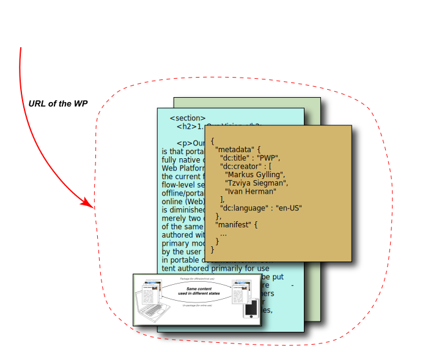
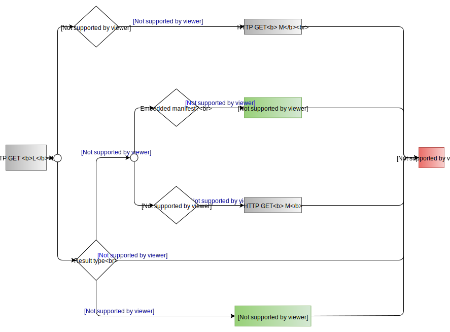

“A book is a discrete collection of text (and other media), that is designed by an author(s) as an internally complete representation of an idea, or set of ideas; emotion or set of emotions; and transmitted to readers in various formats.”
“Books can learn from the Web how to be bounded, but open. The Web can learn from books how to be open, but bounded.”
We dream of a world where books, and indeed all kinds of publications, are first-class citizens of the web. From novels to textbooks, from journal articles to corporate memos, from newsletters to manga, publications are everywhere. But we face challenges in presenting them on the web with the fidelity and ease of use that they deserve. This document introduces Web Publications, a vision for the future of digital publishing based on a fully native representation of documents within the Open Web Platform. Web publications can be packaged and they can be portable. Web publications work online or offline. Web publications can be accessible, linkable, and annotatable.
Status of This Document
This section describes the status of this document at the time of its publication. Other documents may supersede this document. A list of current W3C publications and the latest revision of this technical report can be found in the W3C technical reports index at https://www.w3.org/TR/.
This document outlines a general vision and should not be considered a technical specification. Instead, its goal is to outline that vision and possible technical directions to achieve it, and reflects the discussions that occured in the Digital Publishing Interest Group. In partiucular, this document looks at some of the technical implications, and possible solutions, arising from the use cases and requirements collected by the Digital Publishing Interest Group, and documented in a companion UCR document [pwp-ucr]. Some of the sections are more detailed and more mature than others. A more detailed and rigoruous specification should be done by a separated, dedicated Working Group in the future; the final version of this document will published as an Interest Group Note.
Publication as a Working Draft does not imply endorsement by the W3C Membership. This is a draft document and may be updated, replaced or obsoleted by other documents at any time. It is inappropriate to cite this document as other than work in progress.
This document was produced by a group operating under the
5 February 2004 W3C Patent
Policy. The group does not expect this document to become a W3C Recommendation.
W3C maintains a public list of any patent
disclosures made in connection with the deliverables of the group; that page also includes instructions for disclosing a patent. An individual who has actual knowledge of a patent which the individual believes contains
Essential
Claim(s) must disclose the information in accordance with
section
6 of the W3C Patent Policy.
The Web emerged in 1994, based on a model of individually-authored documents loosely tied together by hyperlinks. Since then, those Web “pages” have evolved into Web sites and Web Apps, with smaller and smaller bits of content, generated by more and more users or databases, with increasing amounts of interactivity. The Web has become a swarm of small stuff, changing very quickly. Although we still talk about pages, this model has little to do with that much older, yet still very powerful, paged-based media we call books.
Over the centuries, “books” have assumed many forms: journals, magazines, pamphlets, newspapers, atlases, comics, manga, notebooks, albums of all sorts. We can define these different manifestations as “publications”: bounded editions of meaningful media, made public.
We believe there is great value in combining this older tradition— of portable, bounded publications—with the pervasive accessibility, addressability, and interconnectedness of the Open Web Platform. We also believe that just as the Web has enabled anyone to express themselves without the need for formal review, so to will people be able to publish their writings in this ad-hoc manner. New models of economic sustainability, innovative experiences of knowledge and invigorated socio-cultural engagement depend on this.
It is the task of the W3C Digital Publishing Interest Group to explore the desirability and feasibility of bringing these two great models of publishing together. This document explores the technical feasibility of this vision, and some of the challenges that arise from our use cases, documented in "PWP Use Cases and Requirements" [pwp-ucr].
A Web Publication (WP) is a collection of one or more constituent resources, organized together in a uniquely identifiable grouping that may be presented using standard Open Web Platform technologies. A Web Publication is not just a collection of links— the act of publishing involves obtaining resources and organizing them into a publication, which must be “manifested” (in the FRBR [frbr] sense) by having the resources available on a Web server. Thus the publisher provides an origin for the WP, and a URL that can uniquely identify that manifestation.
A Web Publication must provide a default ordering of the primary constituent resources, although that order may be changed by user interaction or scripting. A reader must also be able to access any primary resource directly, via navigation provided by the publication itself or the user agent.
A Web Publication may be packaged (and become a PWP—Packaged Web Publication) by having some or all of its constituent resources combined into a single file. The package must include the unique identifier of the manifestation. The act of packaging must be reversible; one must be able to recover the original structure and organization. In particular, relative URLs within the publication must not be altered. References relative to a publication should remain stable. We consider the unpackaged state of a web publication to be canonical. Packaging provides a convenient way to to transmit and store a publication, but user agents are not required to display, annotate, or reference such content in packaged form.
A Web Publication may be portable and be hosted at some other origin. But the PWP must preserve information about its original origin and identity, so that references to a portable copy can be reconciled with the original publication.
It must be possible to make Web Publications accessible to a broad range of readers with different needs and capabilities. This includes general WCAG and WAI requirements of the W3C, but may also include additional accessibility requirements specific to Web Publications. Profiles of Web Publications may also be defined with more stringent accessibility requirements on the publications themselves.
A Web Publication must be available and functional while the user is offline. A user should, as much as possible, have a seamless experience of interacting with a Web Publication regardless of their network connection. We make no distinction between online and offline when defining Web Publications.
A Web Publication, having an identity and nature beyond its constituent resources, will have metadata that describes the publication as a whole. We also introduce the abstract concept of a manifest, which serves to carry information about the constituent resources of the publication. The metadata and manifest will also incorporate information about the sequence and presentation of the content.
At this early stage, we are not defining how Web Publications should be packaged, how they are identified, or how we will store information about the publication as a whole. A separate, more detailed, use cases document [pwp-ucr] accompanies this document. Here, we describe our vision, consider some of the technical challenges we face, and ponder the choices we must make to implement this vision. Our goal is to provide guidance to a future Working Group.
Digital publishing is at a tipping point. EPUB, based largely on web technologies, has been broadly adopted for trade books, and is gaining traction in the educational world. But creating EPUB files requires features beyond what most authoring environments offer. And rendering EPUBs requires a vast additional layer of technology beyond what web browsers offer, resulting in "epub reading systems" which vary widely in their capabilities and quality. This additional complexity in creating, distributing, and viewing publications has slowed the adoption of EPUB, and in many cases has meant that the open web has many more features than are typically available to EPUB.
For non-traditional (or ad-hoc) forms of publishing, users find themselves split between the need to produce easily distributed and consumed content (such as via PDF) and their desire to use the rich presentational and interactive features of the Web.
Reducing or eliminating the gap between what publications require and what the Web can do will greatly reduce the complexity involved for both authoring and publishing.
This convergence is already happening. Travel and educational publishers, to name just a few, already exploit the advanced possibilities of packaged publishing formats to produce highly interactive documents whose features are very close to what one is used to on the Web. And the converse is also true: tutorial and introductory articles have appeared on the Web that have the quality of traditional publications that one was used to seeing in a scientific magazine, but combined with the interactive possibilities of the Web (Mike Bostock’s article on visualizing algorithms or Bret Victor’s article on visualization are just two of several possible examples). “Traditional” publications (for example in scholarly publishing) are increasingly moving on-line, exploring new possibilities and publishing paradigms, but also facing issues in combining their traditional requirements with the reality of the Web today. All of these factors also apply in ad-hoc publishing, where the use of (optionally secure) "micro-sites" has also grown in recent years
Today’s web would also benefit. Many of the use cases described in [pwp-ucr], such as pagination or coping with a collection of resources, are relevant for much document-oriented web content as well. Publishers have also developed workflows, editorial knowledge, and typographic and design skills that could positively influence the evolution of Web content at large.
What we envision for Packaged Web Publications is similar to the goals and techniques of Progressive Web Apps: breaking the boundaries between web sites and mobile apps, an emphasis on “offline” paradigms, and so on. The time is right to broaden the scope and power of the web to include publications.
This document is based on the following definitions.
This document uses the term user agent, as used by the Web community; see, for example, the WAI glossary entry. The publishing community often uses the term “reading system” for roughly the same notion; while there may be subtle differences, it is better to stick to a single term for the purposes of this document.
A Web Publication (WP) is a collection of one or more constituent resources, organized together in a uniquely identifiable grouping that may be presented using standard Open Web Platform technologies.
A Packaged Web Publication (PWP) is a Web Publication whose constituent resources are combined into a single distributable file, using some standard packaging format.
In this document, manifest refers to an abstract means to contain information necessary to the proper management, rendering, and so on, of a publication. This is opposed to metadata that contains information on the content of the publication like author, publication date, and so on. The precise format of how such a manifest is stored is not considered in this document.
A locator is the means by which a user agent is able to to locate a constituent resource of a WP. Since a WP may be online or offline, as well as packaged or not, it may require more than a simple URL.
A Web Resource is an abstract resource that is identified by a URI and can be accessed through standard Web protocols. See [WCA-terms] for further details.
This section considers some of the technical work areas that should be clarified for a more precise and detailed specification of Web Publications. The list is not exhaustive and there are only hints at the technical solutions without claiming to be complete and tested for validity. It must also be emphasized that some of solutions to the problems listed below may not come from W3C, but possibly from other, external organizations (document identification is a typical example).
The 1.3Terminology section provides some conceptual framework for the technical discussion. The most important definition is the one of Web Publications: the fact that a WP, i.e., a single Web Resource, identifies a collection of Web Resources that conveys the “boundedness” which characterizes a publication (e.g. a book or an article). All technical issues in this section are, fundamentally, around the question on how this boundedness should co-exist with the opennes of the Web in general.

Fig. 1A Web Publication represents a collection of Web Resources that together form a publication, rather than the individual resources. (Picture is also available in SVG or PNG formats.)
When handling Web Publications, a user agent has to achieve several tasks:
Provide some sort of a local storage, or cache, of the WP content. To achieve this, the agent has to catch the HTTP(S) requests stemming from the rendering engine and has to, possibly, serve the content from its cache or the file. In other words, the user agent has to act as a network proxy.
Be able to resolve a locators to the consituent resources of a WP, regardless of the state of the WP..
Fig. 2Accessing a Web Publication directly from the Web. (Picture is available directly in SVG or PNG formats.)Fig. 3Accessing a Web Publication from the Web with a local cache. (Picture is available directly in SVG or PNG formats.)
The latest evolution of browser technologies around Web Workers [web-workers] and Service Workers [service-workers] make the development of such a user agent feasible. Service Workers provide a flexible and programmable way to efficiently implement local caching of Web Resources. Caching is implemented as a programmable network proxy, meaning that the browser’s rendering engine becomes oblivious to whether a resource originates from the local cache or directly from the network: these are indeed some of the basic functionalities a user agent must provide to handle Web Publications.
HTTP(S) URLs serve as the fundamental method for addressing a resource, or a fragment thereof, on the Web. Such URLs can also be used to uniquely identify a resource; however, conceptually, the role of addressing and identification are different. Both of these functionalities should be available for Web Publications: a publication should be uniquely identified for, e.g., library catalogues or archival, and a resource locator should be available so that the user could access the content. In other words, a Web PublicationSHOULD have both one or even possibly several identifier(s) and locators. These may be be identical but may also be different: e.g., an identifier may refer to a specific publication by a publisher (e.g., using an ISBN), whereas the locator may refer to a personal copy of that publication that the owner can freely annotate for personal use.
Note
A typical use case for the presence of an identifier beyond the need for a locator is in academic and scholarly publishing. There are currently several methods for citing online works, but there is no equivalent standard method for citations to ebooks. Even if a reflowable ebook is cited by a scholar, the author must refer to the PDF, paper copy, or HTML version to cite it in her bibliography. Identifiers attached to Web Publications should enable stable citations.
A general [URI] (which includes the notion of [URL]) MAY serve as an identifier using, e.g., the [ISBN-URN] or [UUID] schemes. But an identifier does not necessarily resolve to a location on the Web, although it is a good practice to have a dereferencable identifier.
There is no ubiquitously accepted method for identifying a publication among the various document formats (whether electronic or printed). Within the scholarly publishing industry, for example, initiatives such as DOI and CROSSREF have addressed this problem, whereas traditional “trade” publishing rely more on ISBN related services. Some of these identifier schemes provide resolver services or a “standard” representation in term of [URL]. The definition of Web Publication should be oblivious to the exact identification used; this issue is left to specialized services and industry organizations. Architecturally, the only requirement, regarding identifiers, is that a Web PublicationMUST include one, or more, identifiers, and that these should be stable across, for example, copying the publication or changing its location on the Web.
Issue 12: Identifiers and Scope/Context as defined in Web Annotation Data Model
Do we need a more general form of identification to represent fragments?
Issue
Issue 28 on Locators: do we need several, possibly a hierarchy of identifiers? The current discussion converges towards a model whereby a WP may have
A set of identifiers (with possibly a label assigned to each identifier to describe what it is for and who is the authority to assign them)
A state independent locator (can we call this a 'state independent locator'?)
State specific locators of a particular copy (ie, a locator to my copy in zip, and a separate locator to the unpacked version on my server)
The rule being that the entries in (1) SHOULD be changed only by the respective authorities, and they MUST be part of the WP manifest.
A Web Publication is a whole that may consist of many parts. We need a way to describe this whole, a place to store information about the publication and its components. We will use the term manifest, in the sense of a document describing the contents of a ship. A Manifest may include:
Publication metadata, directly or by reference.
A list of publication resources, and information about them.
The default sequencing of primary publication components.
References to tables of contents, glossaries, and other navigational or pedagogical aids.
References to alternative manifestations of the publication.
Hints to the user agent about how to present the publication.
The “Web App Manifest” [web-manifest], currently being developed at W3C, is one example of a technology that could define a WP manifest format. Although the current [web-manifest] draft is geared towards Web Applications, it also includes extension points to add information necessary for WPs. Some of these extra manifest members have already been explored in the “Browser Friendly Format” work of the EPUB3.1 Working Group. Given the broad range of uses we envision for Web Publications, there may even be several alternatives for serializing the information needed in a manifest.
A fundamental question is how a user agent obtains the manifest. Because the publication patterns of WPs can be different depending on publishers, authors, etc., there should be different ways of accessing the manifest: it can be referred to via a link element in an HTML file, can be in an agreed-upon-position within a package, or can be conveyed through a LINK header of an HTTP(S) request. The user agent obtains the manifest by following a hierarchy of these different possibilities; a separate section in the appendix provides more details. (Note that accessing a manifest also has some security issues; the “Obtaining a manifest” of the “Web App Manifest” [web-manifest] document provides some further details.)
Throughout the digital publishing industry, highly specialized metadata vocabularies, and serialization forms thereof, are being used. Within book trade publishing as an example, ONIX [ONIX] has attained a dominant status as a metadata package that typically exists (in XML form) independently of the publication, and contains not only bibliographic metadata, but also trade information such as pricing. Scholarly publishing, on the other hand, often uses various derivatives of the ubiquitous BibTeX vocabulary.
While not contradicting the obvious use cases for out-of-line metadata records as used by publishers, retailers and libraries, Web Publications must define a syntax for basic in-line metadata records that is agnostic to the publication’s state. This means that the syntax must seamlessly support discovery and harvesting by both generic Web search engines, as well as dedicated bibliographic/archival/retailer systems. While it is expected that Web Publications will define a minimal set of required metadata (cf. the section 2.1.2Addressing and Identification), development and adoption of other vocabularies in Web Publications will most likely be deemed as out of scope. In other words, domain-specific metadata requirements are up to the domains themselves to define via a profiling mechanism, or similar yet-to-be-defined means.
Note
The adoption of HTML as a vehicle for expressing publication-level metadata (i.e., using RDFa [html-rdfa] and/or Microdata [microdata] for metadata, like authors or title) would have the added benefits of better I18N support than XML or JSON formats.
Access to the specific features of Web Publications via programming API is an important feature when it comes to Web Applications making use of Web Publications.
Note
These APIs would have to be specified through a separate incubation phase. Indeed, their specification requires a different expertise than most of what is described in this document.
Today, certain types of Web Resources used in a Web Publication (e.g., HTML or SVG) can be accessed, programatically, via the Document interface, that provides attributes and methods to access the full tree-like structure of, say, the HTML content, the various attributes on each level, or the textual content. Programs make use of these possibilities, as well as related interfaces, to implement a multitude of operations on a single resource.
However, a Web Publication is a collection of resources; consequently, a number of operations would also need to be able to be performed on that collection as a whole. Typical examples are:
full text search over the full Web Publication;
ensure a continuous section, list, table, etc., numbering when the corresponding Web Resources are read continuously, i.e., as part of the Web Publication;
provide an outlining and/or table of content generation over the Web Publication
Although these operations may be performed via the current standard interfaces, but any such program would have to construct and manage a collection of such document interfaces. And the caller would also need to have detailed knowlege of the state and packaging model (if any) used for the WP. It would therefore necessary to define such a Document Collection Interface, together with a set of suitable attributes and methods.
Many programmatic steps on Web Publications rely on the interplay of the individual resources and information stored elsewhere, for example in the manifest of the Web Publication. These include the creation of the Document Collection Interface object for the Web Publication itself, access to the various metadata items (e.g., the publication's title), and providing information on the publication’s semantic sructure.
By defining a standard Model and API that would represent a Web Publication, it would make retrieving the information from the manifest and metadata across implementations that use different syntaxes fully interoperable.
As outlined in [dpub-latinreq] or [dpub-css-priorities], the Open Web Platform in general, and CSS in particular, is still lacking solutions for meeting all of the publishers’ expectations on satisfactory typography and layout for digital publications. While improved presentation fidelity will be of paramount importance to the overall success and adoption rate of Web Publications, it is clear that many of these issues are going to be addressed on a case-by-case basis by the CSS Working Group over a longer period of time. STM publishing, for example, where the faithful representation and rendering of, say, mathematical or chemical formulae is of a paramount importance, has particularly severe requirements that must be fulfilled by the Open Web Platform technologies. Similarly, dynamic pagination of reflowable content is not natively supported by browsers today, and as a result User Agents are forced to implement pagination using various ad-hoc approaches, all coming with a significant penalty in terms of development costs, performance and stability.
It is anticipated that native support for pagination (in CSS and/or in the DOM) is going to be put forward by stakeholders as a critical component of Web Publications; thus the finalization of Web Publications may be contingent on the availability of a native pagination model for Web content.
Note
Note that the “Houdini” Task Force, recently started jointly by the W3C CSS WG and the W3C TAG, may open new avenues to handle pagination.
When reading long-form (and sometimes mission-critical) publications, personalization—i.e., the ability for users to adapt the presentation to suit their needs—is of a great importance. While technologies such as CSS Media Queries have come a long way in terms of adapting content to devices, this is not the same thing as adapting to a user. Presentation control features are available in various user agents for publications today. For example, many offer the possibility to dynamically change font size or background/foreground color schemes, or even adopt accessible presentations needed for dsylexia. Unfortunately, today's implementations are brittle and limited due to the lack of an underlying framework that explicitly supports user adaptation.
Web Publications need to incorporate an explicit framework for achieving advanced and predictable user-triggered presentation control. (Note that from this perspective, accessibility can be seen just a radical case of personalization.)
Transmitting, storing, sharing, or archiving a web publication is easier if it can be packaged as a single file. Several such packaging formats exist today, often using ZIP along with an XML manifest. Examples include [OCF] for EPUB, and [ODF] or [OOXML] for office documents. None of these are universally recognized and supported across all publishing or web environments. We expect that packaging will not be tightly coupled to the architecture of web publications, so that different packaging formats can be used for different purposes.
The W3C has published a Working Draft for "Packaging on the Web" [web-packaging], to be used to package bundles of web resources for web caches, local sharing, and CDNs. If this format is adopted by standard user agents (eg. web browsers), we expect to support it as one standard packaging model for Packaged Web Publications.
The security model of the Web, based primarily on the same-origin policy and the concept of “site”, does not apply to portable documents, as the notion of “origin” is based on HTTP properties that are invalidated/non-existent when a document transitions from its online state to the portable state. (Packaged) Web Publications must incorporate a security model that defines rules for both the online and portable states and that aligns with Web Packaging.
Web Publications, by design, must be able to accommodate publications of all sorts, from all domains, and to utilize all available web technologies.
However, in order to address the needs of their constituents and to streamline the authoring and interchange of publications in their ecosystems, certain domains or communities of interest may benefit from limiting the options that could be available or requiring certain features that would necessarily be optional for Web Publications in general. These would result in profiles of Web Publications that would in all respects be valid Web Publications, but with specific adjustments, done in a certain way, to achieve those benefits.
For example, the current publication supply chain based on EPUB benefits from requirements such as a certain packaging format, navigation features, and metadata that presumably would be a subset of the options available to Web Publications in general. It may be desirable for what is currently an EPUB to become a particular type (and thus a profile) of Packaged Web Publication. Such a profile may specify a packaging format, or the exact serialization syntax for its manifest (possibly aligning it with those of the current EPUB specification). Likewise, there could be a profile optimized for education that would require certain features for accessibility and to optimize interoperability with Learning Management Systems (LMSs) or Virtual Learning Environments (VLEs), or a profile for scientific publications requiring citations to be in a particular form and optimized for the publication of data.
Such profiles may need to be able to be recursive, in the way that the current EPUB for Education specification (commonly known as EDUPUB) is a profile of EPUB.
This document outlines a vision for the convergence between the Open Web Platform and portable documents while also significantly advancing and expanding the existing digital publishing ecosystem. The realization of this vision would require a strong cooperation between the traditional publishing and Web communities, based on a close collaboration between the W3C and other relevant organizations, like IDPF, EDItEUR, BISG, or others. While it is envisaged that most of the work could be done in one or more dedicated Working Groups (within W3C or elsewhere, depending on the exact charter), it must be emphasized that many of the features will affect and will be affected by work done elsewhere, within or outside these organizations. The starting point will be to explore and plan for the detailed technical challenges to gain a better insight into the work ahead; this exploration should be done together with the various interested communities.
The goal of this algorithm is to obtain the PWP manifest based on the value of the state independent locator L. This algorithm is performed by the user agent, typically when it is initialized with the state independent locator L of a particular PWP instance. The algorithm retrieves the PWP manifest based on the HTTP(S) responses on a HTTP GET request on L.
Note
If the user agent already has the cached publication, than that will probably prevail (modulo cache state) and there may be no HTTP request in the first place. This section really refers to the situation of a first access.
In what follows, as an abuse of notation, HTTP GET U, for a URL U, refers to an HTTP or HTTPS request issued to the domain part of U, using the path from U. I.e., if U is http://www.ex.org/a/b/c, then HTTP GET U stands for:
With these prerequisites, the algorithm is as follows (see also the figure as a visual aid to the algorithm). The input to the algorithm is the state independent locator of the PWP instance, L.
Issue an HTTP GET L request, possibly returning the message body B.
If the response is not successful (e.g., the response code is a 404), the process fails with no results.
Otherwise, consider the HTTP Response headers:
If the headers include an entry of the form LINK <URI>; rel="manifest" (see [rfc5988]) then issue an HTTP GET URI request.
If that response is successful, the algorithm stops by returning the response message body to the caller as the PWP manifest.
(Otherwise, the algorithm continues.)
Consider the media type of the original message body B. If it is:
A manifest, as identified by its media type (to be defined), the algorithm stops by returning the response content B to the caller as the PWP manifest.
A packaged PWP instance (identified via the media type to be specified for the packed state of a PWP):
Unpack the package, and retrieve the manifest embedded in the package as (to be) specified by the packed state of a PWP.
The algorithm stops by returning the manifest retrieved from the package to the caller as the PWP manifest
An HTML document, then
If the HTML content includes a manifest content embedded in a <script> element, serialized in to one of the accepted serializations for PWP manifests:
Retrieve and parse the content of the <script> element.
If parsing is successful, the algorithm stops by returning the parsed manifest content to the caller as the PWP manifest.
Otherwise, the algorithm continues
If the HTML content includes a <link rel="manifest" href="URI"> in the header:
Issue a HTTP GET URI request
If the response is successful, the algorithm stops by returning the response message body to the caller as the PWP manifest.
If the algorithm gets to this points, it fails with no results.
Note
The algorithm considers only HTML as a possible non-packaged and non-manifest response format. It may become possible to allow, for example, SVG as another, possible format for a PWP; this depends on the final specification of a PWP. The algorithm should then be adapted accordingly by adding a relevant branch (e.g., the specification of SVG includes <script> element that can be used to embed a manifest, but does not have a <link> element).
It may be possible for HTML file to includes several <link> elements referring to a manifest each. If that becomes allowed by a PWP specification, the corresponding step could be modified by taking all link elements into account, and sequentially considering the manifest files in document order to yield the manifest. The same note is valid for several <script> elements.
Similarly, if a PWP specification allows for several different serialization syntaxes for manifests, the user agent should be able to recognize and parse them accordingly. The expectation is that the various possible serializations MUST serialize the same content, i.e., these do not influence the final result.
The algorithm is silent on the details on how a manifest should be retrieved from a package. This depends on the detailed specification of packaging, on whether a manifest would have to be at a known location within a package, on whether there might be several manifest instances within a package, etc. It is also possible that the details would follow a similar approach as described in this algorithm, i.e., relying on embedded and linked manifests of a top level HTML file, for example. As far as the algorithm described in this section is concerned, these details do not influence the final result.
The algorithm makes use of the constant manifest; Which is also used by the Web App Manifest to indicate the relationship between a resource and its manifest.
The user agent MAY include an Accept header (see [rfc7231]) when issuing a HTTP GET to express its preference for, e.g., a packed state of a PWP over manifest payload, or in favor of a particular serialization of the manifest content. Whether this is done or not, and whether the server honors this preference, does not influence the details of the algorithm.

Fig. 4Visual representation of the simple algorithm to retrieve the PWP manifest. The figure is also available in SVG and PNG formats.
The following people have been instrumental in providing thoughts, feedback, reviews, content, criticism, and input in the creation of this document:
Boris Anthony (Rebus Foundation), Luc Audrain (Hachette Livre), Nick Barreto (Canelo, Invited Expert), Baldur Bjarnason (Rebus Foundation), Marcos Caceres (Mozilla), Timothy Cole (University of Illinois at Urbana-Champaign), Garth Conboy (Google), Dave Cramer (Hachette Livre), Romain Deltour (DAISY Consortium), Brady Duga (Google), Heather Flanagan (IETF, Invited Expert), Hadrien Gardeur (Feedbooks), (Markus Gylling (IDPF), Eric Hellman, Ivan Herman (W3C), Deborah Kaplan (Invited Expert), Bill Kasdorf (BISG), George Kerscher (DAISY Consortium), Peter Krautzberger (MathJax, Invited Expert), Charles LaPierre (Benetech), Laurent Le Meur (EDRLab), Vladimir Levantovsky (Monotype), Mia Lipner (Pearson), Christofer Maden (University of Illinois at Urbana-Champaign), Shane McCarron (Spec-Ops), William McCoy (IDPF), Hugh McGuire (Rebus Foundation), Ben De Meester (iMinds), Liam Quin (W3C), Leonard Rosenthol (Adobe), Nicholas Ruffilo (Ingram, Invited Expert), Rob Sanderson (Stanford University), Avneesh Singh (DAISY Consortium), Mike Smith (W3C), Alan Stearns (Adobe), Ayla Stein (University of Illinois at Urbana-Champaign), Tzviya Siegman (Wiley), Nicholas Taylor (Stanford University), Daniel Weck (DAISY Consortium), and Benjamin Young (Wiley).